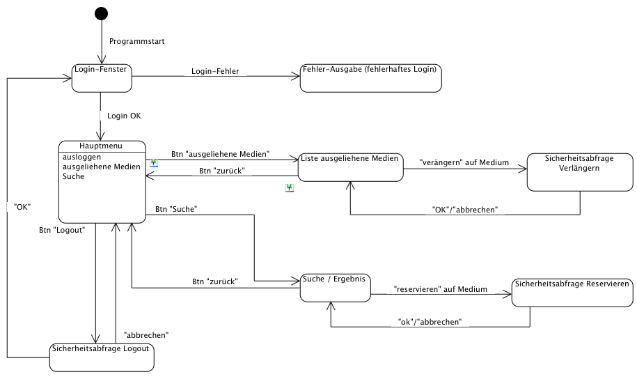
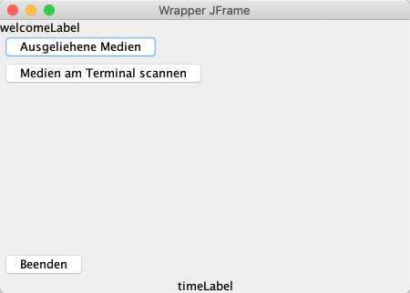
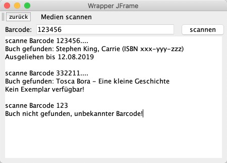
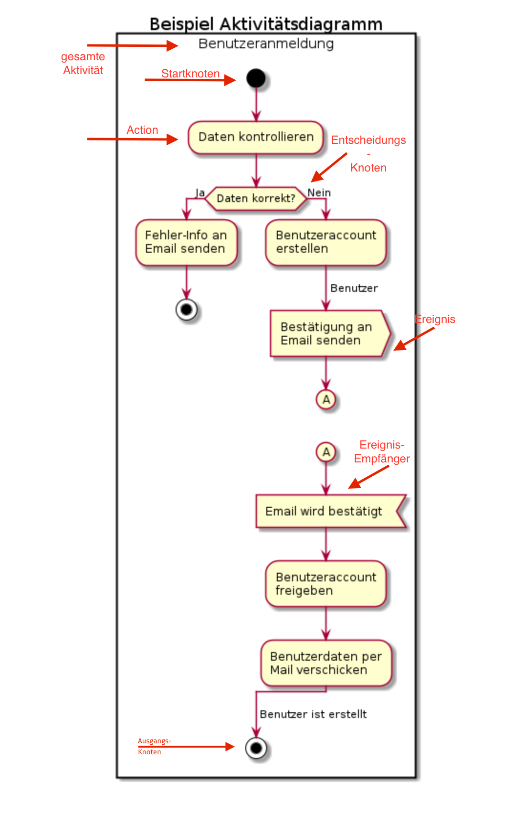
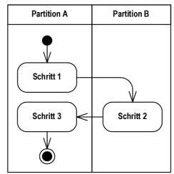

{% extends "../_base_template.html" %}
{% block title %}Lektion 7 - Ablaufplanung mit Aktivitäten und Sequenzen{% endblock %}

{% block sections %}
<section data-markdown>
<textarea data-template>
<i class="fas fa-flask"></i> Besprechung Hausaufgabe State Machine
=============================

Beispiellösung Maskenablauf der Hausaufgabe
* Hat jeder State (Maske) mind. einen Ein- UND Ausgang? (Keine "Dead Ends")
* Hat jeder Ausgang eine Event-Beschreibung? (Keine eventlosen Übergänge)



</textarea>
</section>

<section data-markdown>
<textarea data-template>
<i class="fas fa-graduation-cap"></i> OOD - Abläufe und Sequenzen
=============================

Heutiges Ziel: Gedrängtes Programm:
-------------

* Wir nehmen einen Prototypen des "BibSys" in Betrieb - Ausgangslage für Design-Analyse
* Sie wissen, was ein Aktivitätsdiagramm ist und wo man es einsetzt
* Sie können eigene Aktivitätsdiagramme für Ihr Software-Design entwickeln
* Sie entwerfen ein Aktivitätsdiagramm für einen Use-Case

### Hausaufgaben

* UML Aktivitätsdiagramm erstellen
* BibSys-Prototyp um Maske "Medium am Terminal (Scanner) ausleihen" erweitern
</textarea>
</section>

<section data-markdown data-separator-notes="^Note:">
<textarea data-template>
<i class="fas fa-wrench"></i> Inbetriebnahme des Bibsys-Prototypen
===========

Auf Moodle finden Sie einen rudimentären Prototypen des Programm "Bibsys":

* Der Prototyp ist ein Java-Konsolen-Programm
* Es zeigt exemplarisch einige wenige Schritte: Login, Hauptmenu, Ausleih-Liste
* Es implementiert eine rudimentäre Persistenz-Schicht: Alle Daten werden als Java-Objekte serialisiert und im Filesystem abgelegt.

Wir nehmem das Programm gemeinsam in Betrieb.

Beim ersten Start werden ein paar Demo-Daten angelegt.

* Benutzer: "benutzer1", "benutzer2", "benutzer3"
* Passwort: "1", "2", "3"

Dieser Prototyp ist die Ausgangslage für die weitere Analyse: Wir spielen hier ein weiteres Szenario der Analysephase durch: **Analyse eines bestehenden Programms.**

<i class="far fa-hand-point-right"></i> Es ist mir wichtig, dass Sie auch lernen, fremden Code zu lesen und zu verstehen. Wir benützen daher dieses Vorgehen, um unser Programm kennenzulernen.

</textarea>
</section>

<section data-markdown data-separator-notes="^Note:">
<textarea data-template>
<i class="fas fa-wrench"></i> Analyse des Bibsys-Prototypen
===========

Analysieren Sie den BibSys-Prototypen. Ich rufe nachher jemand von Ihnen auf, um folgende Fragen
zu beantworten:

<div style="display:flex;justify-content:flex-start;align-items:flex-start">
    
    <div>
        <ul>
            <li>Welche Klasse stellt die Login-View (Login-Maske) dar? Welche die zugehörige Applikationslogik (Button-Clicks etc)? Wo wird die Login-View instanziert / angezeigt?</li>
            <li>Wie funktioniert die Benutzer-Authentifizierung (welcher Code-Teil prüft den Login)?</li>
            <li>Welche Klasse ist für die Datenspeicherung / Persistierung zuständig?</li>
            <li>Welche Klasse reagiert auf den Button-Klick "Ausgeliehene Medien anzeigen", und implementiert die Logik dazu?</li>
            <li>Was passiert alles beim Beenden des Programms? Wo findet die Beenden-Logik statt?</li>
        </ul>
    </div>
</div>

<i class="far fa-hand-point-right"></i> Diese Übung zeigt eine alltägliche Tätigkeit vom Software-Entwickler auf:

Lesen von fremdem Code: Sie verbringen den grössten Teil Ihres Entwickler-Alltags mit dem Lesen von
Code, welcher von jemand anderem geschrieben wurde.

**Zeit:** ca. 20min, dann wird je ein Schüler eine Frage beantworten.

</textarea>
</section>


<section data-markdown data-separator-notes="^Note:">
<textarea data-template>
<i class="fas fa-wrench"></i> Ersten Ablauf planen: Medium am Terminal / Scanner ausleihen
===========

Wir wollen nun unseren ersten Ablauf planen und implementieren. Wir werden einen ersten Use-Case angehen und in unserem Prototypen umsetzen:

**Medien am Terminal / Scanner ausleihen**

Ziel ist, dass Benutzer Medien durch Scannen (im Prototyp durch Eingabe des Barcodes in einem Textfeld ) ausleihen können.
Unser Prototyp soll dies in folgenden Masken anbieten:

* Hauptmenu: Auswahl des Menus "Medien am Terminal scannen"
* Scan-Maske:
  * Textfeld (simuliert Barcode-Scanner) für Barcode-Nummer
  * Ausgabefeld Ergebnis

<div style="display:flex;">
    
    
</div>

</textarea>
</section>


<section>
<section data-markdown data-separator-notes="^Note:">
<textarea data-template>
<i class="fas fa-graduation-cap"></i> Abläufe planen mit Aktivitätsdiagrammen
===========

* Das **Aktivitätsdiagramm** beschreibt die Ausführung / Ablauf von Funktionalität / Verhalten. Es gehört zum dynamischen Modell
* Es eignet sich sehr gut, um komplexe Use-Cases resp. Abläufe zu präzisieren. Es stellt einen komplexen Ablauf / Aktivität als grafisches **„Flussdiagramm“** dar.
* Es besteht aus einem **Kontrollfuss** (Ablauf) und einem **Datenmodell** (Datenaustausch zwischen den Aktionen / Funktionen)
* Ein- und Ausgabeobjekte sind optional, es können auch Start- und Endknoten verwendet werden.
* Objektflüsse können aufgezeigt werden (wie "wandern" Objekte durch das Programm)


</textarea>
</section>

<section data-markdown data-separator-notes="^Note:">
<textarea data-template>
<i class="fas fa-graduation-cap"></i> Abläufe planen mit Aktivitätsdiagrammen
===========

* Durch Verzweigungen entstehen mehrere **Szenarien**: Jeder Weg durch das Diagramm stellt **ein Szenario** dar. Wir betrachten
  Szenarien später bei den Sequenzdiagrammen.

  
* Benutzen Sie **"Swim Lanes"** (horizontale/vertikale Gruppierungen), um die Aktivitäten den verantwortlichen Modulen zuzuordnen:
  Dies können z.B. die Software-Layer sein, oder auch einzelne Klassen / Objekte, wo die Aktivität stattfindet.

  
</textarea>
</section>
</section>

<section data-markdown data-separator-notes="^Note:">
<textarea data-template>
<i class="fas fa-wrench"></i> Aktivitätsdiagramm entwickeln: VisualParadigm
===========

Kurze Einführung in Aktivitätsdiagramme mit VisualParadigm: Wir schauen uns die wichtigsten Funktionen im UML-Tool an:

* Erstellen eines Aktivitätsdiagrammes
* Aktivitätsrahmen
* Actions/Schritte
* Start/Endknoten
* Objektfluss, Input-/Output-Pins
* Verzweigungen / Zusammenführungen
* Swim Lanes

</textarea>
</section>

<section data-markdown data-separator-notes="^Note:">
<textarea data-template>
<i class="fas fa-wrench"></i> Aktivitätsdiagramm und Prototyp-Code entwickeln: Ausleihe am Terminal
===========

Wir wollen in unserem Bibsys-Prototypen einen ersten Use-Case planen und umsetzen. Dieses und das nächste Mal befassen wir uns mit der Planung und Implementation des Use-Cases **"Medien am Terminal/Scanner ausleihen"**.

* **Schritt 1**: Nehmen Sie den Bibsys-Prototypen in Betrieb
* **Schritt 2**: Studieren Sie den Programmcode: Verstehen Sie, was passiert, bis Sie das Hauptmenu (nach dem Login) vor sich haben?
* **Schritt 3**: Planen Sie das Aktivitätsdiagramm für den Use-Case (siehe nächste Folie), und implementieren Sie die Funktionalität im Prototypen!

<div style="display:flex;">
    
    
</div>


</textarea>
</section>

<section data-markdown data-separator-notes="^Note:">
<textarea data-template>
<i class="fas fa-wrench"></i> Aktivitätsdiagramm und Prototyp-Code entwickeln: Ausleihe am Terminal
===========

Aktivitätsdiagramme sind wichtig, um komplexe Programmabläufe zu planen / zu dokumentieren.
Ich stelle Ihnen einen rudimentären, lauffähigen Prototypen von "Bibsys" zur Verfügung, auf dem Sie
die weiteren Funktionen aufbauen.

**Aufgabe: Entwickeln Sie das technische Ablaufdiagramm für den Use Case _Medien am Terminal/Scanner_ ausleihen**.
Implementieren Sie die Funktionalität danach im BibSys-Prototypen.

* Analysieren Sie erst den bestehenden Code: Verstehen Sie ihn? Was passiert vom Programmstart bis
  zur Anzeige des Hauptmenus?
* Ihr Diagramm zeigt die technischen Abläufe der Scan-Maske: vom Barcode-Scan bis zum ausgeliehenen Buch.
* Überlegen Sie sich die notwendigen (technischen) Abläufe, inkl. Verzweigungen: Es zeigt alle Eventualitäten des Ablaufs auf.
* Teilen Sie die Aktivitäten in **Swim Lanes** ein: Eine Swim Lane zeigt die **Klasse** / das **Teilsystem**, welches die Aktivität ausführt.
* Analysieren Sie sich die verschiedenen Szenarien (Verzweigungen), die auftreten können (z.B. Buch unbekannt etc.)
* Nehmen Sie die [ **"Checkliste 006 Aktivitätsdiagramme"** ](https://moodle.bztf.ch/pluginfile.php/43852/mod_folder/content/0/Checkliste_006_Aktivita%CC%88tsdiagramm.pdf?forcedownload=1) zur Hilfe: Sie zeigt Ihnen, auf welche Kriterien Sie achten müssen.
* Prüfen Sie die **Qualität Ihres Aktivitätsdiagrammes** anhand der "analaytischen Schritte" in der Checkliste.

<i class="far fa-hand-point-right"></i> **Versuchen Sie, die geplante Aktivität als Programm-Code umzusetzen!** Ziel ist, dass Ihr Prototyp in der Lage ist, Bücher via Barcode auszuleihen!

**Hausaufgabe**: Stellen Sie das Aktivitätsdiagramm fertig. Einreichen via Moodle. Versuchen Sie, das Geplante nun im Bibsys-Prototypen umzusetzen.
</textarea>
</section>
{% endblock %}
